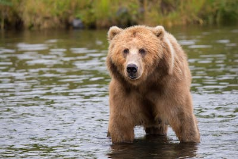

Bears
- 1. Ollie
- 2. Mona
Bear Summary
Bears are the most recently evolved carnivore, found in Europe, Asia, and the Americas. Closely related to the dog and the raccoon, most bears climb with ease and are strong swimmers.
Bears are the most recently evolved carnivore, found in Europe, Asia, and the Americas. Closely related to the dog and the raccoon, most bears climb with ease and are strong swimmers.

The giraffe is a large African hoofed mammal belonging to the genus Giraffa. It is the tallest living terrestrial animal and the largest ruminant on Earth. Traditionally, giraffes were thought to be one species, Giraffa camelopardalis , with nine subspecies.
Lion, ( Panthera leo), large, powerfully built cat (family Felidae) that is second in size only to the tiger. The proverbial “king of beasts,” the lion has been one of the best-known wild animals since earliest times. Lions are most active at night and live in a variety of habitats but prefer grassland, savanna, dense scrub, and open woodland.

Monkey, in general, any of nearly 200 species of tailed primate, with the exception of lemurs, tarsiers, and lorises. The presence of a tail (even if only a tiny nub), along with their narrow-chested bodies and other features of the skeleton, distinguishes monkeys from apes.
Alligators are carnivorous and live along the edges of permanent bodies of water, such as lakes, swamps, and rivers. They commonly dig burrows in which they rest and avoid weather extremes. The average life span of alligators is about 50 years in the wild.